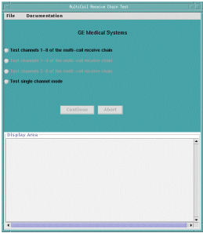
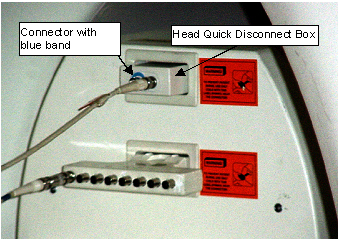
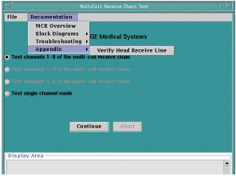

Proprietary to General Electric Company
Direction 5440000, Rev# 5
Signa HDxt Service Methods
Module Version 1.0, Version Date 5/15/07
Proprietary to General Electric Company |
| Required Persons | Preliminary Reqs | Procedure | Finalization |
|---|---|---|---|
| 1 | Not Applicable | 60 hours | Not Applicable |
| Item | Qty | Effectivity | Part# | Manufacturer | |
|---|---|---|---|---|---|
| screw | 1 | - | 3333333 | - | |
| hammer | 1 | - | - | - | |
| Item | Qty | Effectivity | Part# | Manufacturer | |
|---|---|---|---|---|---|
| - | - | - | |||
Click the  (Service Tools) icon to open the Service Desktop Manager.
(Service Tools) icon to open the Service Desktop Manager.
Click  in the lower part of the Service Desktop Manager if the Common
Service Desktop is not already visible.
in the lower part of the Service Desktop Manager if the Common
Service Desktop is not already visible.
| NOTE: | It takes a few seconds for the Common Service Desktop to appear. If the Common Service Desktop never appears, then confirm that it isn’t already open or hasn’t been dragged partially off the screen or isn’t hidden behind another open window. |
Click the  (Image Quality) tab at the top of the Common Service Desktop.
(Image Quality) tab at the top of the Common Service Desktop.
Select [MultiCoil Receive Chain Tool] from the menu on the left side of the CSD.
Under MultiCoil Receive Chain Tool on the right side of the CSD, select [Click here to start this tool]. The MultiCoil Receive Chain Test window opens as shown in Illustration 1.
Illustration 1: MULTICOIL RECEIVE CHAIN TEST MENU

Identify the receive cable on the Head Coil. This cable is usually marked with a blue tape on the Head Quick Disconnect Box, but it can be confirmed by the following:
Insert the MCR H/W into the MultiCoil (lower) connector on the carriage cover and attach one of the cables from the head coil (with the DC blocker bullet) to the connector with the blue band.
Illustration 2: MULTI COIL TOOLS PLUGGED IN

From the [Documentation] menu on the tool’s Graphical User Interface, select [Appendix] and then [Verify Head Receive Line]. See Illustration 3.
Illustration 3: VERIFY HEAD RECEIVE LINE

Follow the instructions on the flowchart and click on the [Download] button at the bottom of the screen. This will automatically download the protocol to the scan desktop. See Illustration 4.
Illustration 4: FUNCTIONAL CHECK SCREEN

| NOTE: | DO NOT INCREASE THE TG HIGHER THAN THE VALUE OF 120 SHOWN IN Illustration 4. INCREASING THE TG MUCH ABOVE 120 CAN DAMAGE THE PREAMP BOARD ON THE CHANNEL UNDER TEST. THIS WOULD RESULT IN REDUCED SNR ON THE CHANNEL |
Go to the scan desktop. When the download is complete, select [Manual Prescan]. If the selected cable is the receive line, then you should get signal on receiver 1. If there is no signal, repeat the step with the other cable from the head coil.
Once the correct cable has been identified as the receive cable, close the displayed flowchart document by clicking on the [Close] button. See Illustration 4.
Select the appropriate test option.
Click [Continue].
No finalization steps.